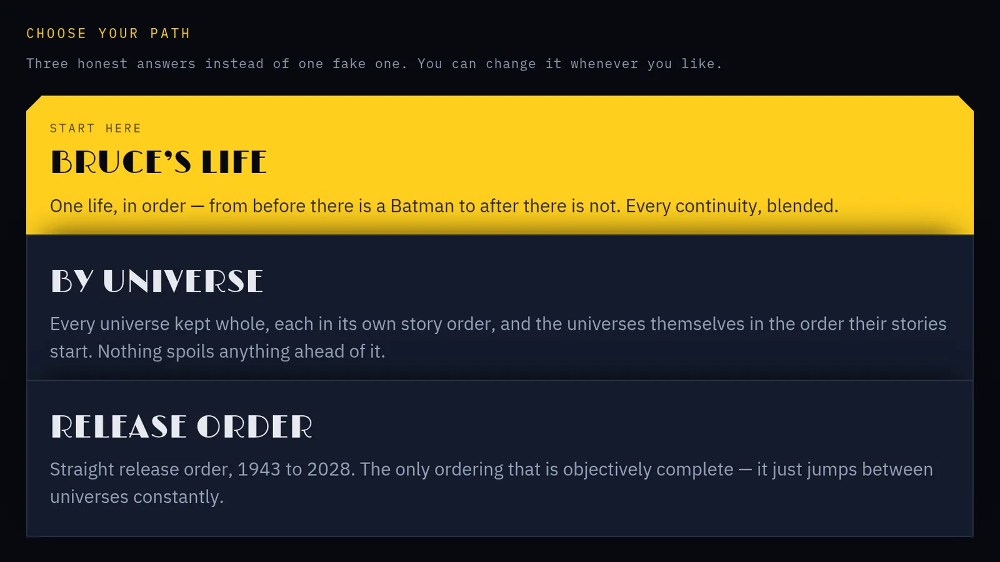

Somebody has to stay up with Batman, and we will

Sunday before the wire starts. No listing moved, and the paper still owes you a first night: who we are, who this is for, and the map next door.
01
There's one reporter here, and one lamp. We've been reading about Batman a long time. We've watched a dozen Batmen arrive and leave, three reboots sold as the last word, and more Friday-night date slips than we'd care to count. A good panel still stops us. That love is why we're hard to fool.
This is Nocturne, Night Watcher's paper. The Night Final is its one edition: every Sunday, late, with the week's Batman news across screen, comics, games, toys and books. It's written for the Night Watchers, the ones still up at this hour who would rather know than guess.
Here's what we promise. The wire is the record: the studios, DC, the publishers, the makers and the trades, and we always say who said it. The street is the fan sites, forums and insiders, and when we use it we name it the street, never fact. Leaks don't run. Nothing gets spoiled. A toy is news, never shopping. When we're wrong, the correction sits at the top of the story, dated.
None of this is a secret. The brief and the voice guide we write to are public. Pull up a chair.
02
Next door, one path runs through every Batman on screen
The building next door keeps a map. Night Watcher puts every Batman story ever filmed, animated and live action, on one path: 137 films and 71 seasons of television across 44 continuities, from a 1943 serial to titles already dated for 2028.
Batman has never had one timeline, so the map gives three ways to walk it. By universe keeps each continuity whole. Bruce's life lines them up as one man across eleven eras; the README calls that an interpretation, not a canon. Release order runs them the way they came out. You choose once, and switching never clears a tick. The map carries no spoilers.
A title that isn't out yet is parked. It sits on the path with its date, never ticked and off every count. There's no account, and nothing in the map tracks you, because your progress stays in your own browser.
One person built it and keeps it. The map keeps the order. The paper keeps the news.

03
He wasn't finished in 1939, and he still isn't
Batman first appeared in Detective Comics #27, which hit newsstands on 30 March 1939, cover-dated May 1939. DC says the idea took a little time to form after that. His origin followed in Detective Comics #33, cover-dated November 1939. Dick Grayson, the first Robin, arrived in Detective Comics #38, cover-dated April 1940, and we'll admit to a soft spot. The Joker and Catwoman came in Batman #1, cover-dated March 1940. Alfred arrived in Batman #16, cover-dated April 1943.
DC files his history in ages, from the Golden Age of 1939 through the New 52 and Rebirth. The lighter years ran all the way to the 1966 television show. Then, from the late '60s, he was given a new direction, and it led to the Batman we know.
That's the case for a weekly paper. A character rebuilt for every generation is still being added to, and each week leaves a little more of him on the file.
04
We read the wire, and we tell you when it's the street
The beats are screen, comics, games, toys and books. A film date is news. So is a comics solicitation, a game from its publisher, a figure from its maker and a new novel with Batman on the spine.
The wire comes first: the studios, DC, the publishers, the makers, and edited newsrooms with bylines and a corrections policy. When a studio says it, we say it plainly. When a trade reports it, we name the trade until someone first-party confirms it.
The street hears things first and is sometimes right. When a tip is interesting, we print it as word on the street, plainly labelled, and go looking for the wire behind it. A social post points; it doesn't prove. The whole method is in our voice guide, for anyone who wants to check our work.
05
We think a Batman paper owes you a paper trail
We think a paper owes its readers what the map next door already keeps: a record. Every version of the map since 1.0.0, tagged on 27 July 2026, is written down with what changed and why, in the archive and the current changelog. Nothing moves quietly over there.
We'll hold ourselves to the same. If a date we print slips, you'll see the slip. If we get one wrong, the correction sits at the top of the story with the day we fixed it. You should never have to wonder whether a Sunday page was quietly edited on a Tuesday.
We also think a Batman paper owes you patience. Some weeks will be thin. We won't pad them, and we won't spoil anything to fill a column. There's history back to 1939 if we need something to read.
The city stays wet. Get some sleep, Night Watchers. The file's open again next Sunday.